01
Children Support
Providing practical support and encouragement to children in our communities.
THE BOND OF GREATNESS HUMANITARIAN INITIATIVE LAGOS (DBOG)
A group of like-minded people working together to support our immediate communities, with a special focus on children and young people.
ABOUT DBOG
The Bond Of Greatness Humanitarian Initiative Lagos (DBOG) is a group of like-minded individuals who came together with a shared commitment to helping our immediate communities.
Our work is centered on children and youths. We support communities through humanitarian outreach, practical assistance, community activities and initiatives that create room for young people to grow and thrive.
Learn more about what we do →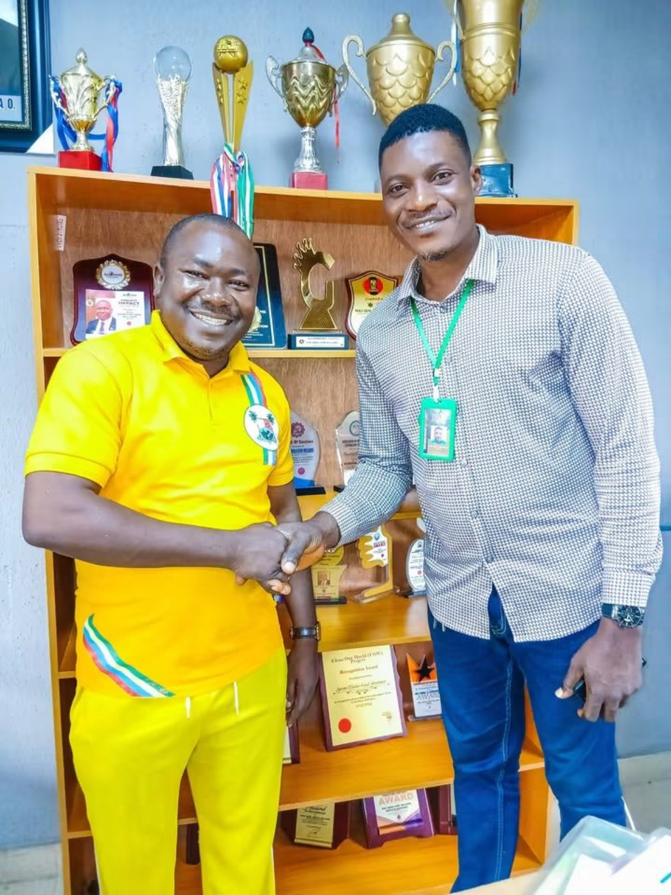
WHAT WE DO
Our activities are shaped around practical needs we see in the communities we serve.
Providing practical support and encouragement to children in our communities.
Supporting young people and encouraging positive growth, participation and opportunity.
Taking essential assistance and care directly to people and communities in need.
Working with community members and partners to respond to local needs.
OUR WORKS
These photographs show some of the people, outreach activities and support work carried out by DBOG.
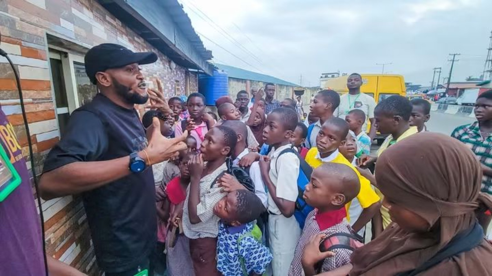
DBOG team members engaging with children during community outreach activities.
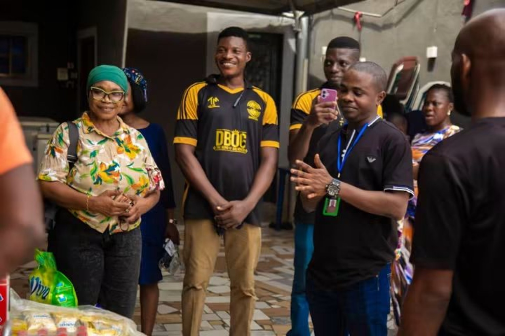
Team members and community participants coming together during an outreach activity.
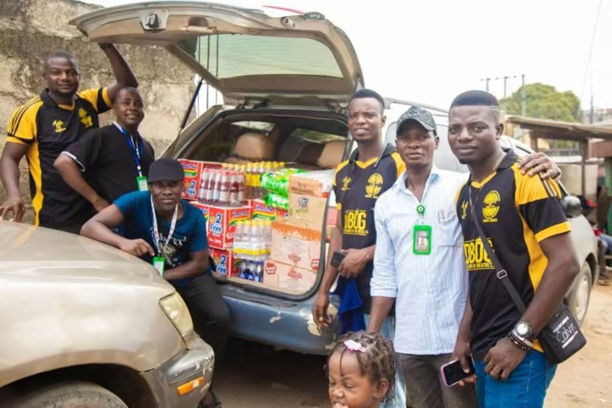
Practical assistance delivered to children and families through community outreach.
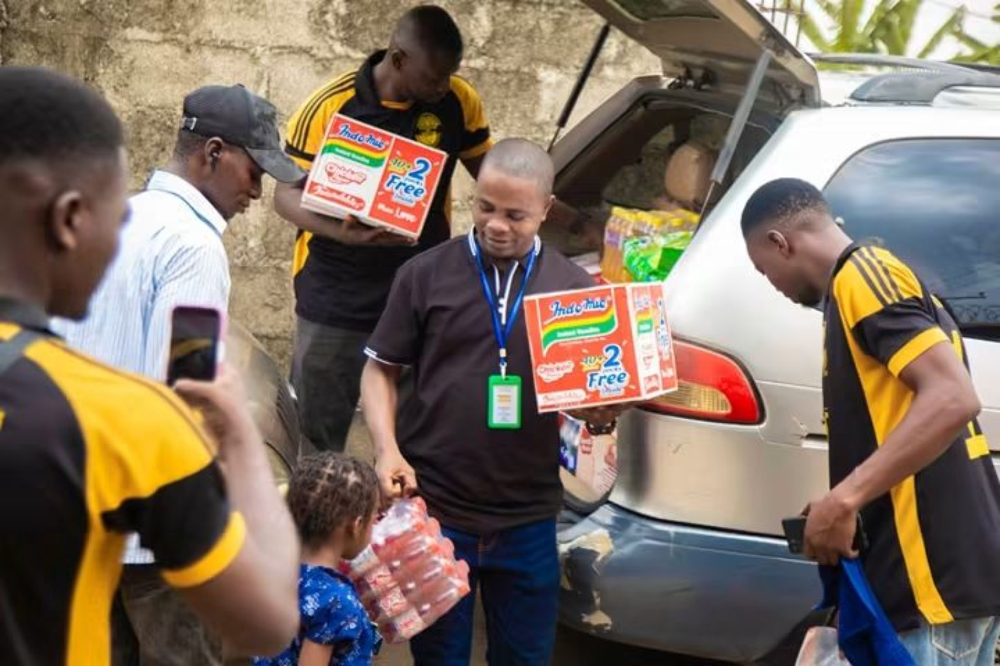
DBOG members working together to distribute food and household essentials.
WHY IT MATTERS
We believe meaningful humanitarian work starts by paying attention to the needs around us and showing up to help.
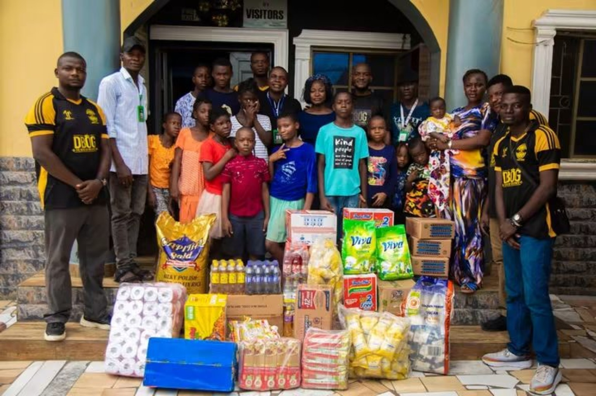
MEET THE TEAM
DBOG is powered by people who give their time, energy and resources to community service.
Working with communities and partners to coordinate humanitarian activities.
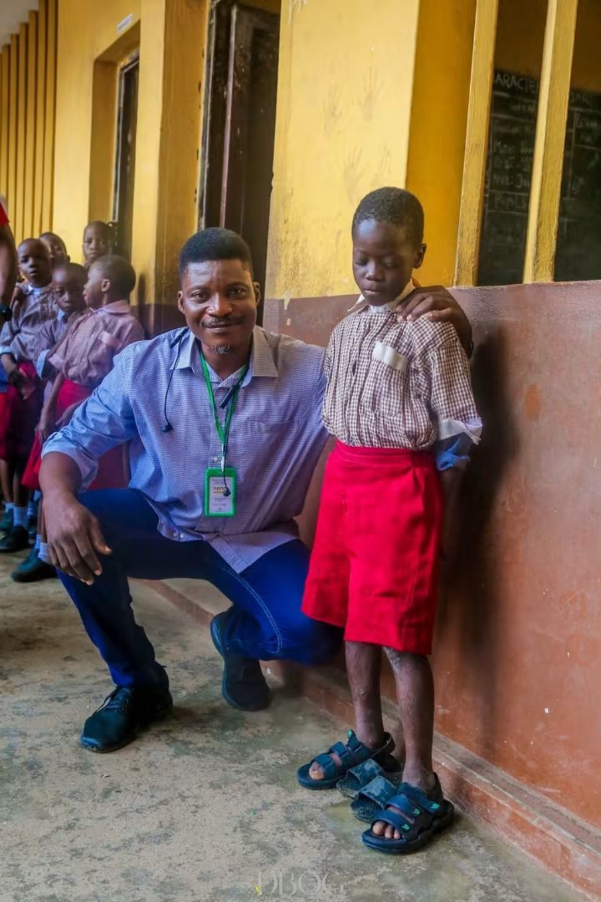
Connecting with children, families and community members during field activities.
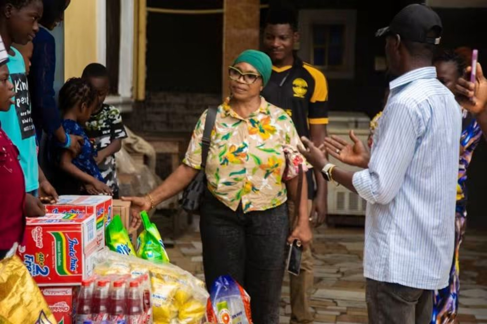
A growing group united by a commitment to service and community impact.
MOMENTS
Real moments from DBOG activities with children, families, schools and community partners.
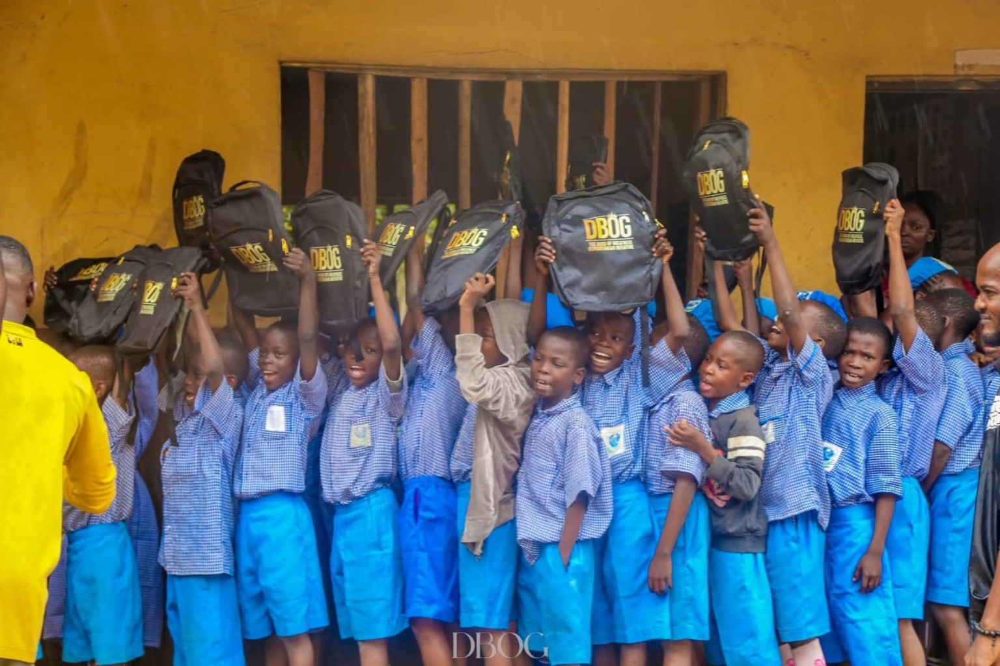
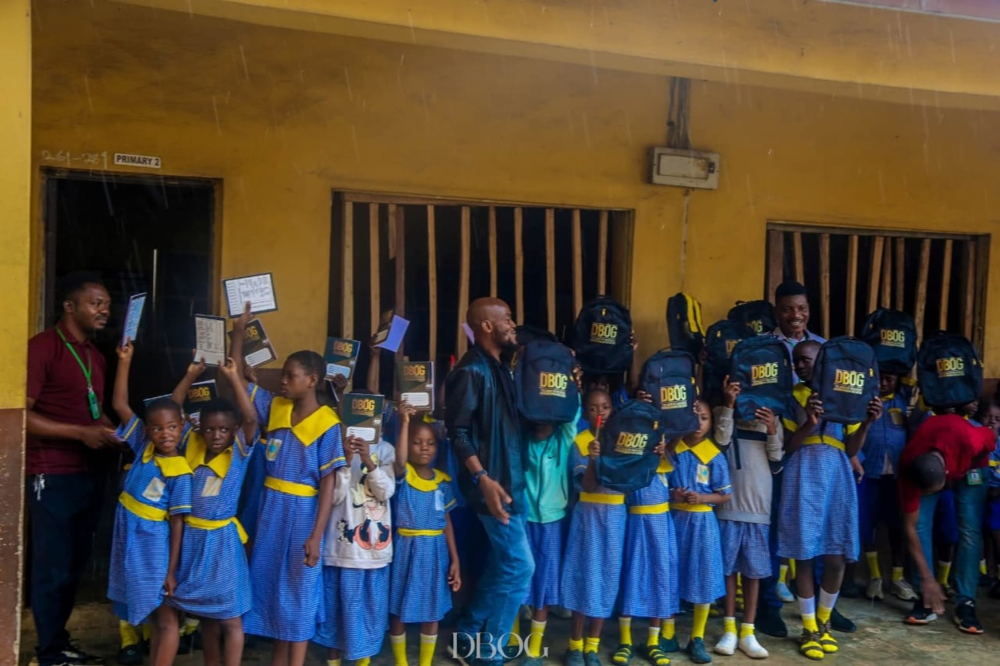
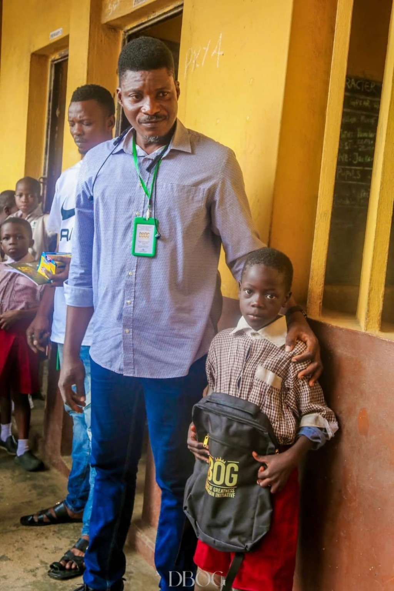

GALLERY
A growing collection of real DBOG moments from outreach, school support, community activities and humanitarian service. Tap any photo to view it larger.
PARTNER WITH US
You can support DBOG's humanitarian activities through partnership or direct financial support. Every contribution can help us extend our reach and respond to community needs.
For now, we do not process donations online. Direct bank transfer details are provided below.
CONTACT DBOG
For enquiries, partnership discussions or information about our activities, reach out through DBOG's official contact channels.